BeagleTA and CuraLit: Resources for Streamlining Literature Reviews
Research Collaboration Speaker Series
Department of Computer and Information Science | Allegheny College
05 November 2026
Academic Research
Senior Academic Research Projects
- Third year: complete a seminar course to provide research fundamentals.
- Fourth year: complete an original academic research project in the major.
- Faculty members mentor senior projects.
Success in Academic Research
Generally said, …
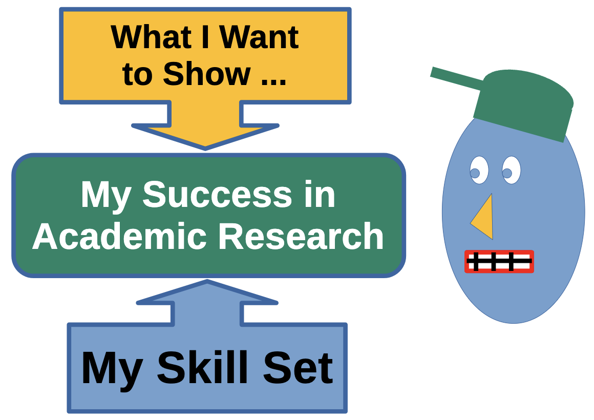
How do I know when I am doing things right?
Success results when the research question meets one’s skill.
Slow Starts in Beginner Projects
Starting a research project can be overwhelming for novice researchers, often because it is difficult to narrow down a clear research question amid a flood of information. This can lead to frustration and delays in getting started.
Challenges in Research
- Beginning the project itself
- Formulating clear hypotheses (Knox et al.)
- Searching for credible sources (Alisic et al.)
- Overcoming imposter syndrome (Ossovski et al.)
Challenges in Beginning Research
The cause of these problems?
- Difficulty discerning relevant literature for an idea
- Literature reviews are insufficient:
- Difficulty identifying a feasible research topic
- Difficulty developing a research question
- Lack of enthusiasm and inspiration
My Experience: One Cause of Troubles
After an area of interest has been established
Which Books Contain the Best Ideas?
Finding an idea across lots of books is hard!
There are often too many results to be helpful in the initial steps of creating a literature review.
Which Article Contains the Best Ideas?
Finding an idea across lots of articles is also hard!
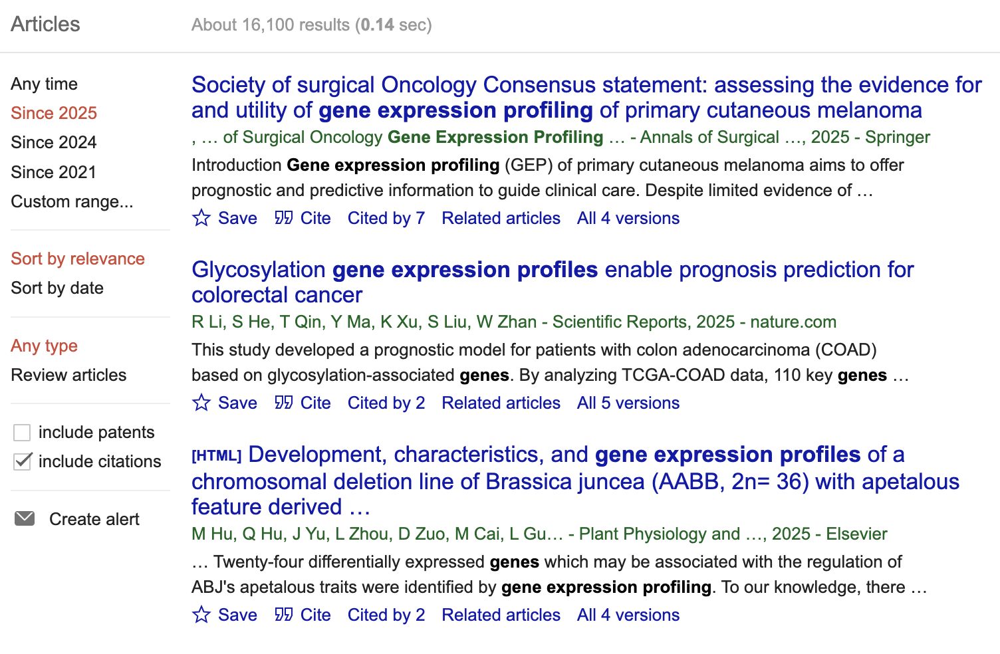
Note: about 16,000 results just for the year 2025.
We May Ask
Visual Learning
Benefits
- Visual learning: instruction based on visual cues and graphics, with less dependence on reading text.
- Visual learning is often more productive for young people than non-visual learning.
Published Work
- Visuals enhance cognitive engagement (Tong, Yang, and Chen, 2024).
- Diagrams, charts, and videos improve memory retention (Ahmad and Abd Halim, 2024).
- Interactive tools boost motivation and focus.
BeagleTA
Low-End, Local, Text Analysis and Visualization for Literature Reviews
- A literature-parsing system to help locate articles on specific topics.
- Visual and interactive output helps find relevant articles according to keywords.
Local Corpus
Non-commercial article data
- PubMed contains millions of articles in STEM science and other fields.
- PubMed Central Open Access non-commercial bulk data
Bundled Tools
Because some analyses are involved!
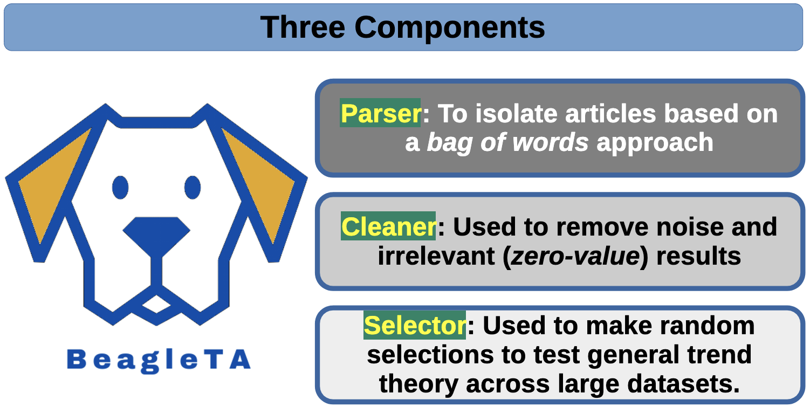
- Supports different types of article analyses.
- Corpus quality may be studied for its content.
BeagleTA: Workflow
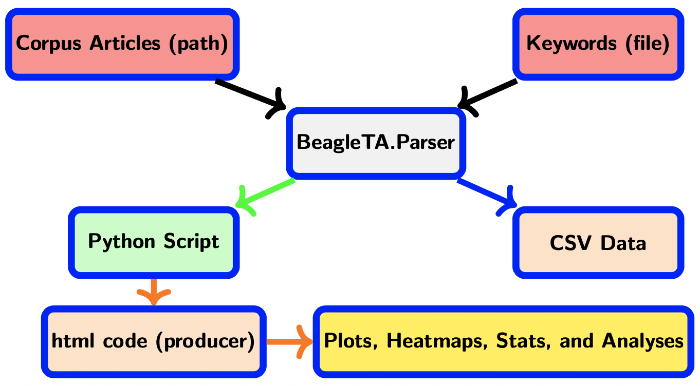
Tech Stack for BeagleTA
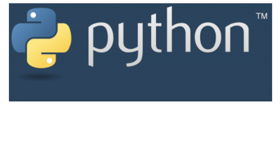
- Frontend: Rust, Python
- AI/ML: Python, scikit-learn, Networkx, Others
The Screenshot of Running Parser
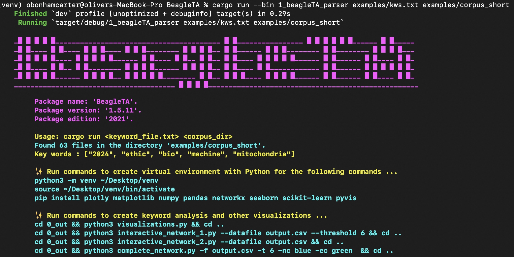
Custom Generated Python Script
After parsing articles for keywords, suggested commands are presented to further the analysis.
We May Ask
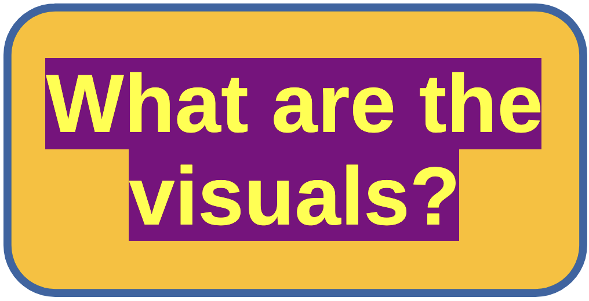
Articles Found From Keywords (BeagleTA)
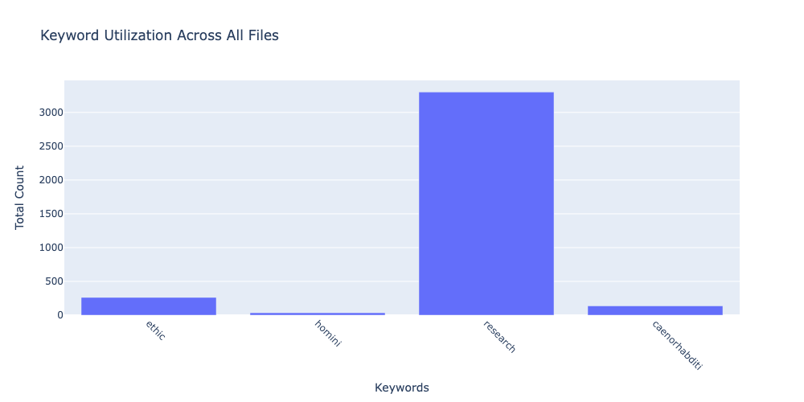
- Magnitudes represent the number of articles returned by the keywords.
- Some keywords can be too general; others may not be specific enough.
K-Means Clustering of Cosine Similarities (BeagleTA)
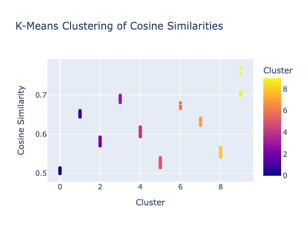
K-means clustering of cosine similarity shows diversity in the results.
Heatmaps: Keyword Occurrences in Articles (BeagleTA)
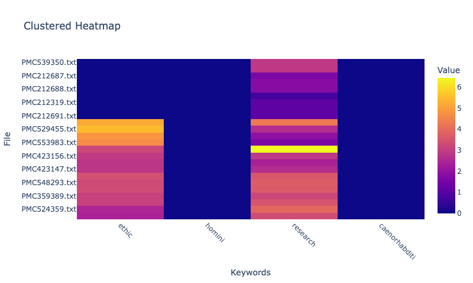
- Heatmaps show keywords found across the articles.
- Articles containing more of the selected keywords may be better fits for a literature review.
Interactive Networks: Relationship Visualization (BeagleTA)
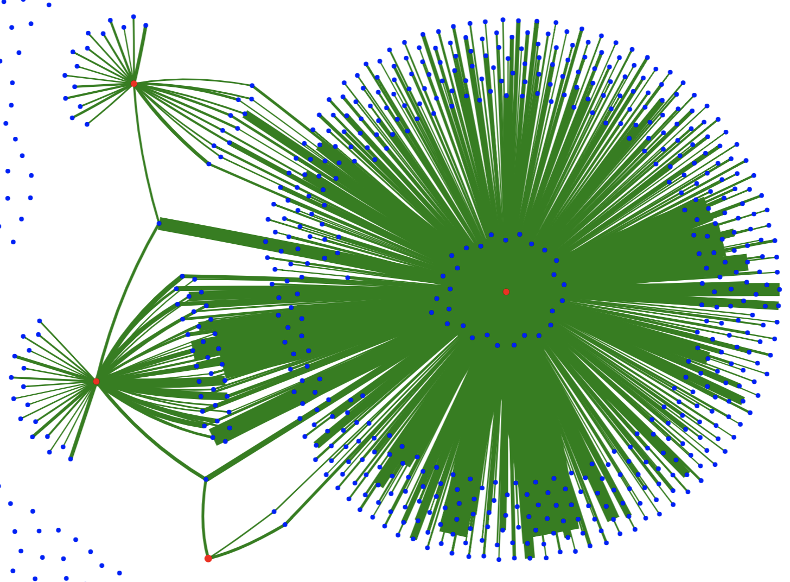
- Blue nodes are articles (PMIDs); red nodes are keywords.
- Edges represent connections through common keywords.
CuraLit
High-End, Local Literature Curation With AI Support
- CuraLit is a simple, browser-based tool that uses AI to help students write literature reviews.
CuraLit: Workflow
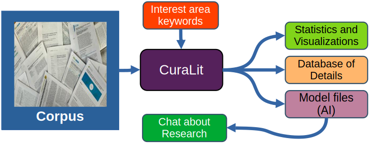
Tech Stack for CuraLit
- Frontend: Rust, Python, HTML, Flask
- Backend: Docker, Ollama
- Database: Sqlite3
- AI/ML: Python, scikit-learn, NetworkX
Improved Visuals: Interactive Network
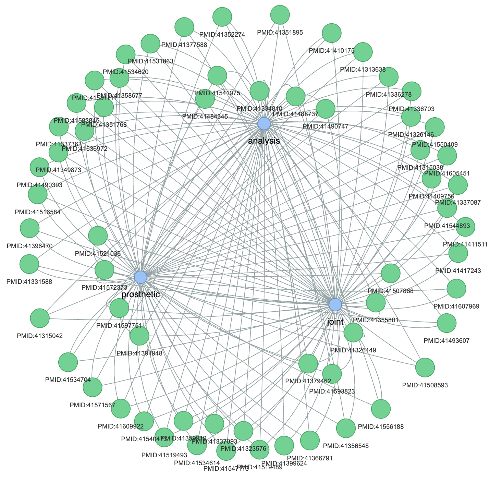
(Similar graphic)
Improved Visuals: Interactive Journal Groups
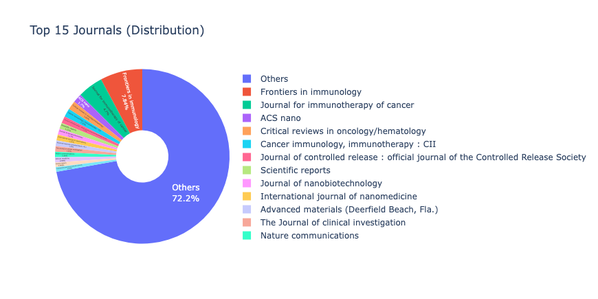
(Similar graphic)
Browser-Based For Simplicity
“I like using CuraLit because it helps in project development but command line work is not intuitive for me”
-Student Tester
“Could we use a clickable interface instead using the CLI controls?”
-Student Tester
- CuraLit can be engaged by command line function and by browser-based controls which are designed to be more user-friendly and accessible
- CLI commands are given when using the browser-based interface
Keyword Search and Article Selection
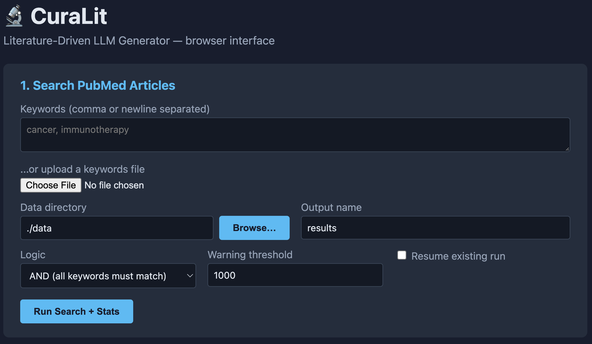
- Students search for keywords of interest areas. Articles are selected based on these keywords.
- The interface is designed to be easy to use, even for students with no programming experience.
Analysis of KWs, MeSH Frequencies, Authors, Journals and Etc.
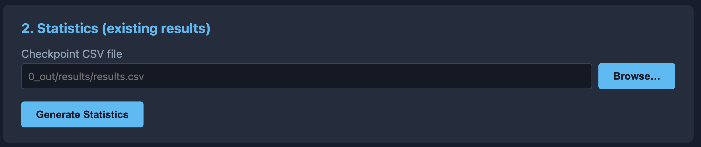
- Generated statistics and visualizations help students understand the literature and select articles for their review.
Create Ollama Models for Literature Review
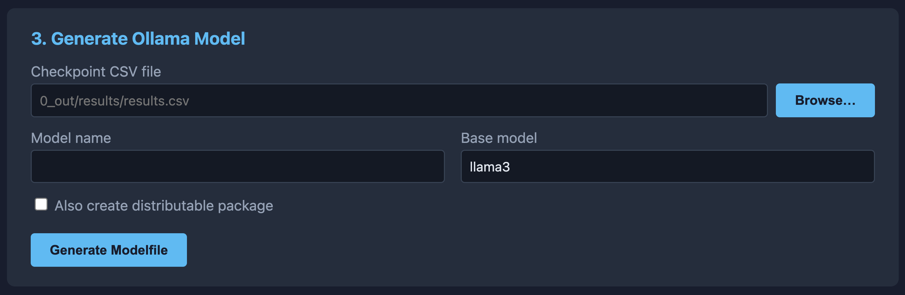
- Ollama is used to create local AI models for literature review and handles all AI operations with the created models.
Create Database to Ensure Factuality
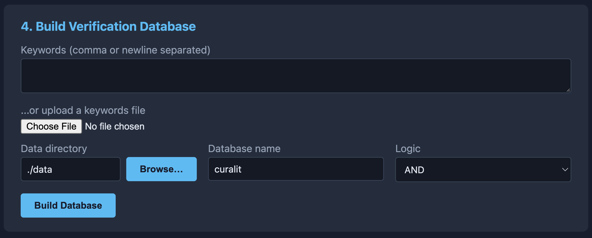
- Collection of article citation details and abstracts in a local SQLite database ensures that the AI model can answer questions with factual information.
Create RAG Index for Literature Review
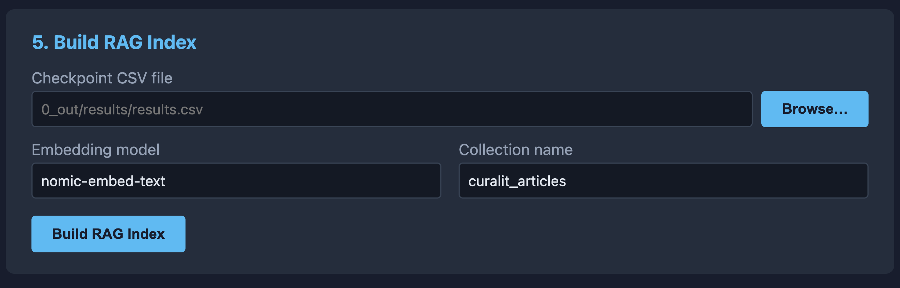
- RAG (Retrieval-Augmented Generation) embeds articles (via Ollama’s
nomic-embed-textmodel) into a local Qdrant (Docker) vector storage structure. - This allows for the generation of responses based on the exact text of matching articles.
Ask a Question About the Literature
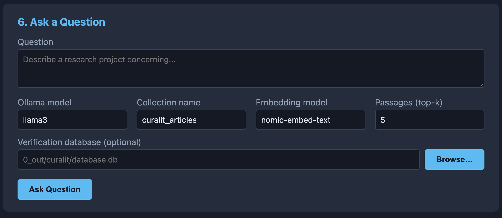
- Students can ask questions about the literature and receive answers and article summaries based on the articles in the database.
Concluding Thoughts
- BeagleTA and CuraLit offer various tools and features that provide to assist new investigators in their research development.
- Each tool requires different amount of computation power and so if a machine has limited resources, BeagleTA may be a better choice for the initial literature review.
- Supporting students in their research development is a key factor in helping them succeed as students and in their careers.
Future Works
- Further development of CuraLit to use fewer resources and to be more user-friendly.
- Working on plans to put these tools in the hands of young researchers across STEM fields.
- It is hoped that resources such as these will help attract more students into scientific research.
Cited Works
- Knox, C. J. et al. 2024. Mentoring across difference and distance: building effective virtual research opportunities for underrepresented minority undergraduate students in biological sciences. Mbio 15(1):e01452–23.
- Alisic, A., et al. 2024. How long can I wait and how much frustration can I stand? Volitional traits and students’ phd-intention and pursuit. International Journal for Educational and Vocational Guidance 24(1):99–123.
- Ossovski, E., et al. 2024. Frustration tolerance among computer-science-related novice university students. European Journal of Engineering Education 1–18. Park, H.; Ahn, B.; and Kim, T. 2024. An exploration of research trends on metaverse: topic modeling with latent dirichlet allocation. Quality & Quantity 1–20.
Reach Out!
Questions, Comments, or Whatever!
Contact and References
- obonhamcarter(a)allegheny.edu
- www.oliverbonhamcarter.com
- BeagleTA GitHub Project: https://github.com/developmentAC/BeagleTA
- CuraLit GitHub Project: https://github.com/developmentAC/curalit